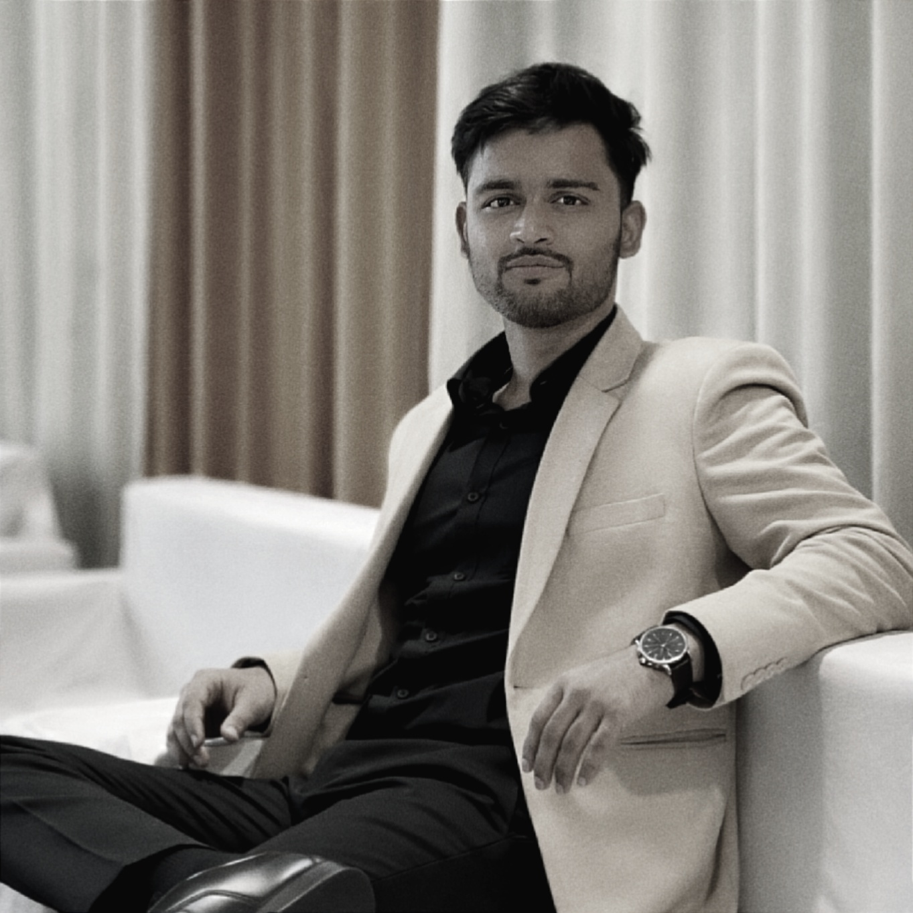

Hello! I’m Ishan Tripathi, a technology enthusiast from Jaunpur, Uttar Pradesh, currently pursuing a Master of Computer Applications (MCA). I have a strong interest in web development and enjoy building practical digital solutions.
My journey into technology is driven by curiosity, discipline, and a constant desire to learn. I am focused on improving my programming and problem-solving skills while working with modern web technologies.
I am particularly interested in areas such as Web Development and Cybersecurity, and I enjoy exploring new tools and technologies that help create efficient and user-friendly applications.
Beyond coding, I also enjoy creative work such as digital editing and content creation, which allows me to combine technical skills with creativity.
My first ambition was to serve the nation in the Indian Airforce, a goal that instilled in me a deep sense of discipline and determination.
Life took a different turn, leading me to pursue a Bachelor of Computer Applications in Varanasi, where I discovered a new passion: technology.
Today, I channel my ambition into becoming a digital warrior, aiming to be a white-hat hacker and skilled developer, ready for the future.